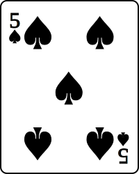
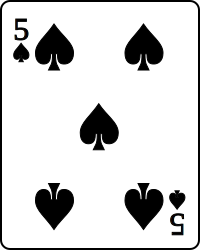
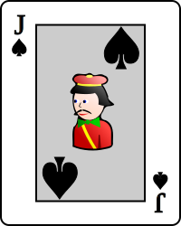
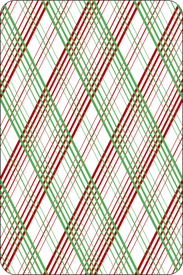
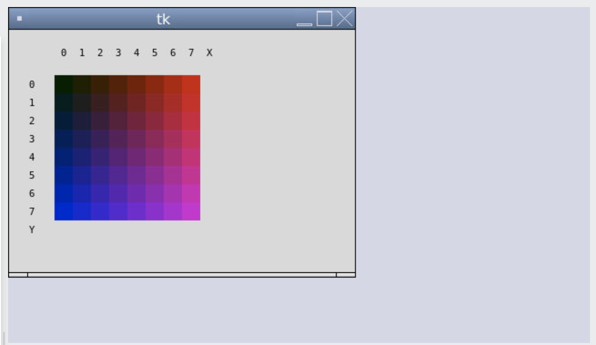
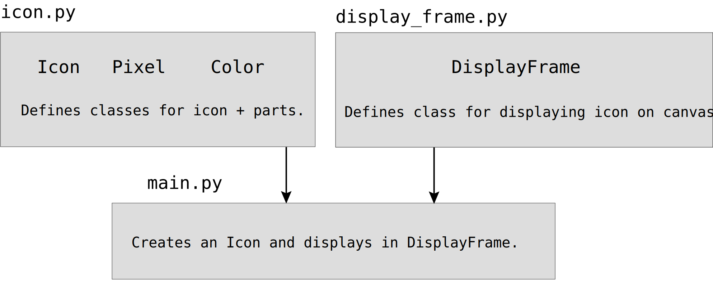

Iterators
- Press O or Escape for overview mode.
- Visit this link for a nice printable version
- Press the copy icon on the upper right of code blocks to copy the code
Class outline:
- Iterators
- For loops with iterators
- Built-in functions for iterators
Reminder: Iterables
Lists, tuples, dictionaries, strings, and ranges are all iterable objects.
my_order = ["Yuca Shepherds Pie", "Pão de queijo", "Guaraná"]
ranked_chocolates = ("Dark", "Milk", "White")
best_topping = "pineapple"
scores = range(1, 21)
prices = {"pineapple": 9.99, "pen": 2.99, "pineapple-pen": 19.99}
Iterators
An iterator is an object that provides sequential access to values, one by one.
iter(iterable) returns an iterator over the elements of an iterable.
next(iterator) returns the next element in an iterator.
toppings = ["pineapple", "pepper", "mushroom", "roasted red pepper"]
topperator = iter(toppings)
next(iter) # 'pineapple'
next(iter) # 'pepper'
next(iter) # 'mushroom'
next(iter) # 'roasted red pepper'
next(iter) # ❌ StopIteration exception
A useful detail
Calling iter() on an iterator just returns the iterator:
numbers = ["一つ", "二つ", "三つ"]
num_iter = iter(numbers)
num_iter2 = iter(num_iter)
assert num_iter is num_iter2
Making iterators for iterables
iter() can return an iterator for any iterable object.
my_order = ["Yuca Shepherds Pie", "Pão de queijo", "Guaraná"]
order_iter = iter(order)
next(order_iter) # "Yuca Shepherds Pie"
ranked_chocolates = ("Dark", "Milk", "White")
chocolate_iter = iter(ranked_chocolates)
next(chocolate_iter) # "Dark"
best_topping = "pineapple"
topping_iter = iter(best_topping)
next(topping_iter) # "p"
scores = range(1, 21)
score_iter = iter(scores)
next(score_iter) # 1
Making iterators for dictionaries
In Python 3.6+, items in a dict are ordered according to when they were added.
prices = {"pineapple": 9.99, "pen": 2.99, "pineapple-pen": 19.99}
An iterator for the keys:
price_iter = iter(prices.keys())
next(price_iter) # "pineapple"
An iterator for the values:
price_iter = iter(prices.values())
next(price_iter) # 9.99
An iterator for key/value tuples:
price_iter = iter(prices.items())
next(price_iter) # ("pineapple", 9.99)
For loops
For loop execution
for <name> in <expression>:
<suite>
- Python evaluates
<expression>to make sure it's iterable. - Python gets an iterator for the iterable.
- Python gets the next value from the iterator and assigns to
<name>. - Python executes
<suite>. - Python repeats until it sees a StopIteration error.
iterator = iter(<expression>)
try:
while True:
<name> = next(iterator)
<suite>
except StopIteration:
pass
Iterating over iterables
A standard for-in loop on an iterable will iterate through all the items from start to finish.
my_order = ["Yuca Shepherds Pie", "Pão de queijo", "Guaraná"]
for item in my_order:
print(item)
lowered = [item.lower() for item in my_order]
ranked_chocolates = ("Dark", "Milk", "White")
for chocolate in ranked_chocolates:
print(chocolate)
prices = {"pineapple": 9.99, "pen": 2.99, "pineapple-pen": 19.99}
for product in prices:
print(product, " costs ", prices[product])
discounted = { item: prices[item] * 0.75 for item in prices }
best_topping = "pineapple"
for letter in best_topping:
print(letter)
For loop with iterator
When used in a for loop, Python will call next() on the iterator
in each iteration:
nums = range(1, 4)
num_iter = iter(nums)
for num in num_iter:
print(num)
For loops with used-up iterators
nums = range(1, 4)
num_iter = iter(nums)
first = next(num_iter)
for num in num_iter:
print(num)
Iterators are mutable! Once the iterator moves forward, it won't return the values that came before.
nums = range(1, 4)
sum = 0
num_iter = iter(nums)
for num in num_iter:
print(num)
for num in num_iter:
sum += num
Use cases for iterators
Reasons for using iterators
A code that processes an iterator using iter() or next()
makes few assumptions about the data itself.
- Changing the data storage from a list to a tuple, map, or dict doesn't require rewriting code.
- Others are more likely to be able to use your code on their data.
An iterator bundles together a sequence and a position with the sequence in a single object.
- Passing that object to another function always retains its position.
- Ensures that each element of the sequence is only processed once.
- Limits the operations that can be performed to only calling
next().
Blackjack demo
| Player |

 

|
| Dealer |




|
Useful built-in functions
Functions that return iterables
| Function | Description |
|---|---|
list(iterable) |
Returns a list containing all items in iterable
|
tuple(iterable) |
Returns a tuple containing all items in iterable
|
sorted(iterable) |
Returns a sorted list containing all items in iterable
|
Functions that return iterators
| Function | Description |
|---|---|
reversed(sequence) |
Iterate over item in sequence in reverse order
(See example in PythonTutor) |
zip(*iterables) |
Iterate over co-indexed tuples with elements from each of the iterables
(See example in PythonTutor) |
map(func, iterable, ...) |
Iterate over func(x) for x in iterable
Same as [func(x) for x in iterable]
(See example in PythonTutor) |
filter(func, iterable) |
Iterate over x in iterable if func(x)
Same as [x for x in iterable if func(x)]
(See example in PythonTutor) |
Built-in map function
map(func, iterable):
Applies func(x) for x in iterable
and returns an iterator
def double(num):
return num * 2
for num in map(double, [1, 2, 3]):
print(num)
for word in map(lambda text: text.lower(), ["SuP", "HELLO", "Hi"]):
print(word)
Turn the iterator into a list using list()
doubled = list(map(double, [1, 2, 3]))
lowered = list(map(lambda text: text.lower(), ["SuP", "HELLO", "Hi"]))
Exercise: Termified
Let's implement this without using a list comprehension.
def termified(n, term):
"""Returns every the result of calling TERM
on each element in the range from 0 to N (inclusive).
>>> termified(5, lambda x: 2 ** x)
[1, 2, 4, 8, 16, 32]
"""
Exercise: Termified (solution)
Using map:
def termified(n, term):
"""Returns every the result of calling TERM
on each element in the range from 0 to N (inclusive).
>>> termified(5, lambda x: 2 ** x)
[1, 2, 4, 8, 16, 32]
"""
return list(map(term, range(n + 1)))
Compare to list comprehension version:
def termified(n, term):
return [term(x) for x in range(n + 1)]
Built-in filter function
filter(func, iterable):
Returns an iterator from the items of iterable where func(item) is true.
def is_fourletterword(text):
return len(text) == 4
for word in filter(is_fourletterword, ["braid", "bode", "brand", "band"]):
print(word)
for num in filter(lambda x: x % 2 == 0, [1, 2, 3, 4]):
print(num)
Turn the iterator into a list using list()
filtered = list(is_fourletterword, ["braid", "bode", "brand", "band"]))
evens = list(filter(lambda x: x % 2 == 0, [1, 2, 3, 4]))
Exercise: Divisors
Let's implement this without using a list comprehension.
def divisors(n):
"""Returns all the divisors of N.
>>> divisors(12)
[1, 2, 3, 4, 6]
"""
Exercise: Divisors (solution)
Using filter:
def divisors(n):
"""Returns all the divisors of N.
>>> divisors(12)
[1, 2, 3, 4, 6]
"""
return list(filter(lambda x: n % x == 0, range(1, n)))
Compare to list comprehension version:
def divisors(n):
return [x for x in range(1, n) if n % x == 0]
Built-in zip function
zip(*iterables):
Returns an iterator that aggregates elements from each of the iterables into co-indexed pairs
# From: # To:
["one", "two", "three"] --> ("one", "uno") ("two", "dos") ("three", "tres")
["uno", "dos", "tres"]
english_nums = ["one", "two", "three"]
spanish_nums = ["uno", "dos", "tres"]
zip_iter = zip(english_nums, spanish_nums)
english, spanish = next(zip_iter)
print(english, spanish)
for english, spanish in zip(english_nums, spanish_nums):
print(english, spanish)
Turn the iterator into a list using list()
zipped = list(zip(english_nums, spanish_nums))
Exercise: matches
List comprehensions are allowed for this one...
def matches(a, b):
"""Return the number of values k such that A[k] == B[k].
>>> matches([1, 2, 3, 4, 5], [3, 2, 3, 0, 5])
3
>>> matches("abdomens", "indolence")
4
>>> matches("abcd", "dcba")
0
>>> matches("abcde", "edcba")
1
>>> matches("abcdefg", "edcba")
1
"""
Exercise: matches (solution)
def matches(a, b):
"""Return the number of values k such that A[k] == B[k].
>>> matches([1, 2, 3, 4, 5], [3, 2, 3, 0, 5])
3
>>> matches("abdomens", "indolence")
4
>>> matches("abcd", "dcba")
0
>>> matches("abcde", "edcba")
1
>>> matches("abcdefg", "edcba")
1
"""
return sum([1 for a, b in zip(a, b) if a == b])
Exercise: List of lists
def list_o_lists(n):
"""Assuming N >= 0, return the list consisting of N lists:
[1], [1, 2], [1, 2, 3], ... [1, 2, ... N].
>>> list_o_lists(0)
[]
>>> list_o_lists(1)
[[1]]
>>> list_o_lists(5)
[[1], [1, 2], [1, 2, 3], [1, 2, 3, 4], [1, 2, 3, 4, 5]]
"""
Exercise: List of lists (solution)
def list_o_lists(n):
"""Assuming N >= 0, return the list consisting of N lists:
[1], [1, 2], [1, 2, 3], ... [1, 2, ... N].
>>> list_o_lists(0)
[]
>>> list_o_lists(1)
[[1]]
>>> list_o_lists(5)
[[1], [1, 2], [1, 2, 3], [1, 2, 3, 4], [1, 2, 3, 4, 5]]
"""
return [list(range(1, i + 1)) for i in range(1, n+1)]
Exercise: Palindrome
def palindrome(s):
"""Return whether s is the same sequence backward and forward.
>>> palindrome([3, 1, 4, 1, 5])
False
>>> palindrome([3, 1, 4, 1, 3])
True
>>> palindrome('seveneves')
True
>>> palindrome('seven eves')
False
"""
Exercise: Palindrome (solution)
def palindrome(s):
"""Return whether s is the same sequence backward and forward.
>>> palindrome([3, 1, 4, 1, 5])
False
>>> palindrome([3, 1, 4, 1, 3])
True
>>> palindrome('seveneves')
True
>>> palindrome('seven eves')
False
"""
return all([a == b for a, b in zip(s, reversed(s))])
# OR
return list(s) == list(reversed(s))
Icon project
Icon design
An OOP Icon
Goal: Use OOP to represent an Icon with pixels at a particular location with a particular color.

The Color class
class Color:
def __init__(self, r, g, b):
self.r = r
self.g = g
self.b = b
def __repr__(self):
return f"Color({self.r},{self.g},{self.b})"
def to_hex(self):
return f"#{self.r:02x}{self.g:02x}{self.b:02x}"
red = Color(255, 0, 0)
print(red.to_hex())
The Pixel class
class Pixel:
def __init__(self, x, y, r, g, b):
self.x = x
self.y = y
self.color = Color(r, g, b)
def __repr__(self):
return f"Pixel({self.x},{self.y},{self.color})"
pixel = Pixel(0, 7, 255, 0, 0)
print(pixel.color.to_hex())
The Icon class
class Icon:
def __init__(self, width, height, pixels=None):
self.width = width
self.height = height
self.pixels = pixels
if not self.pixels:
self.pixels = [ Pixel(x, y, 0, 0, 0)
for x in range(width) for y in range(height)]
def __repr__(self):
pixels = ",".join([repr(pixel) for pixel in self.pixels])
return f"Icon({self.width}, {self.height}, {self.pixels})"
icon = Icon(2, 2, [Pixel(0, 0, 255, 0, 0),
Pixel(0, 1, 255, 50, 0),
Pixel(1, 0, 255, 100, 0),
Pixel(1, 1, 255, 150, 0)])
for pixel in icon.pixels:
pixel.color.g += 50
The DisplayFrame class
from tkinter import Canvas, Frame, BOTH, font
class DisplayFrame(Frame):
def __init__(self):
super().__init__()
self.pack(fill=BOTH, expand=1)
self.canvas = Canvas(self)
self.canvas.pack(fill=BOTH, expand=1)
def draw_icon(self, icon):
x_offset = 50
y_offset = 50
pixel_size = 20
for pixel in icon.pixels:
top_left_x = x_offset + pixel.x * pixel_size
top_left_y = y_offset + pixel.y * pixel_size
self.canvas.create_rectangle(
top_left_x,
top_left_y,
top_left_x + pixel_size,
top_left_y + pixel_size,
outline="",
fill=pixel.color.to_hex())
All together
from tkinter import Tk
from icon import Icon, Pixel, Color
from display_frame import DisplayFrame
# Initialize the Tkinter frame and canvas
root = Tk()
display = DisplayFrame()
display.draw_icon(icon)
# Run Tkinter loop
root.mainloop()
Visit the Repl.it demo to see all the classes used with the Python tkinter package for graphics rendering.
Iterator-producing functions
What happens if we...
map the pixels?
changer = lambda p: Pixel(p.x, p.y,
p.x * 30,
p.color.g + 30,
p.y * 30)
icon.pixels = list(map(changer, icon.pixels))
filter the pixels?
is_odd = lambda p: p.x % 2 == 0
icon.pixels = list(filter(is_odd, icon.pixels))
Iterable-processing functions
What happens if we ask for the min and max of the pixels?
max_pix = max(icon.pixels)
min_pix = min(icon.pixels)
Python doesn't know how to compare Pixel instances! Two options:
- Implement dunder methods (
__eq__,__lt__, etc) - Pass in a key function that returns a numerical value:
rgb_adder = lambda p: p.color.r + p.color.g + p.color.b
max_pix = max(icon.pixels, key=rgb_adder)
min_pix = min(icon.pixels, key=rgb_adder)